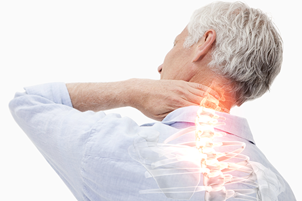
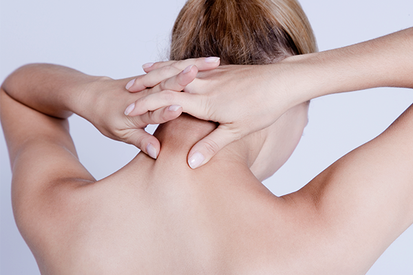

031-622-0700
병원소개
인사말
의료진 소개
둘러보기
척추관절클리닉
허리
어깨
목
무릎
손
발
팔꿈치
주요시술
C-ARM 특수신경치료
프롤로 치료
체외충격파 치료
초음파유도 치료
도수교정클리닉
도수교정 클리닉
대상포진클리닉
대상포진 클리닉
영양수액클리닉
영양수액 클리닉
진료안내
진료시간 및 상담전화
오시는 길
비급여항목
척추관절클리닉
허리
어깨
목
무릎
손
발
팔꿈치
목

목디스크
목디스크는 경추 마디 사이에 있는 추간판(디스크)이 여러가지 이유로 터져나오면서 옆에 있는 신경을 자극하여 나타나는 통증 질환입니다.
튀어나온 디스크가 어느 쪽 신경을 누르는가에 따라 다양한 증상이 나타날 수 있습니다.
최근 스마트폰과 컴퓨터 등을 하는 시간이 늘어남에 따라 목디스크 발병률이 늘어나는 추세입니다.
원인
스마트폰, 컴퓨터, 태블릿PC를 장시간 사용하는 경우
일자목, 거북복이 있는 경우
교통사고 등의 외상이 있는 경우
높은 베개를 사용하거나 수면습관이 좋지 않은 경우
증상
목과 어깨에 묵직한 통증이 느껴진다.
어깨, 팔, 손, 손가락까지 통증과 저림이 느껴진다.
자주 두통이 있다.

일자목(거북목)
우리 목은 C자 형태를 유지해야 하는데 여러 원인에 의해 1자형태로 변형된 질환으로 목이 앞으로 나와있는 모습이 거북이를 닮았다하여 거북목이라고도 불립니다.
거북목증후군이 있으신 분들은 일상생활에서도 경추가 받는 하중이 커지기 때문에 경추디스크가 받는 부담이 매우 크며,
외부 충격을 받을 경우 충격흡수가 안되어 더욱 심각한 결과를 가져올 수 있습니다.
원인
턱을 앞으로 빼고 있는 습관이 있는 경우
스마트폰, 컴퓨터, 태블릿 PC를 장시간 사용하는 경우
장시간 고개를 숙이고 있는 습관이 있는 경우
엎드리거나 옆으로 누워서 잠을 자는 경우
증상
목과 어깨에 뻐근한 느낌과 통증이 있다.
목과 어깨가 자주 저리다.
고개를 숙이거나 젖힐 때 통증이 있다.
잦은 두통이 있다.